Welcome back to the Wizard Fella newsletter! This is the fifth(5)(V) issue
There's a bunch of new stuff so here we go
It has now been a little more than a
The first video I have of it is dated 22/06/2025. Here is a bit from that video.
I know this is different from what I usually put in the newsletter but it was interesting to me and maybe it's interesting to you too. Now back to more standard stuff...
I'm still not gonna reveal much about part 3 to not spoil the fun, but I can say its
All that's left is some assets, smoothing out animations and maybe another playtest or two
Here's some screenshots of it though
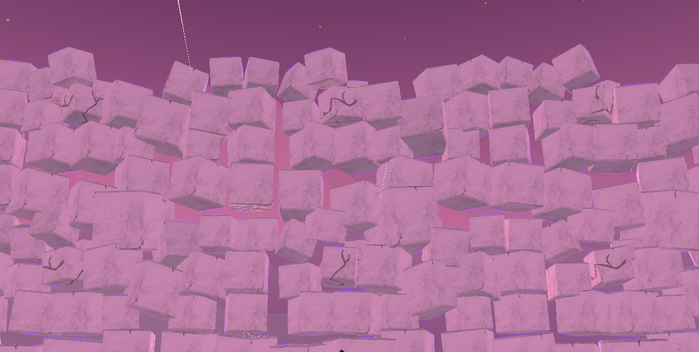
Screenshot 1 of Big Dreams Part 3
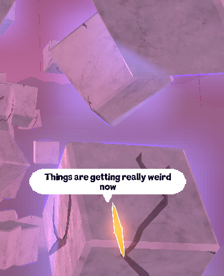
Screenshot 2 of Big Dreams Part 3
Up until this month the game didn't have a main menu and now it's mostly done!
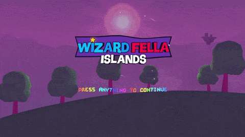
Press Anything
I tried to capture the same vibe that the old Wizard Fella main menu had with the "Press anything" before it really shows all the buttons, and I think it turned out even better!
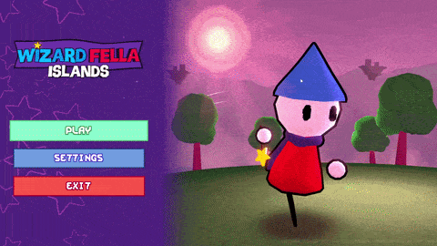
Settings Menu
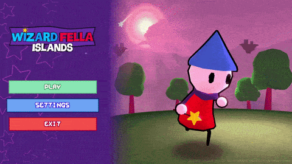
Play Menu
It's still missing a level select once you load into an existing save and some assets for settings/save select screen.
Also someone suggested I could change the environment based on the last Island you visited so I might add that at some point.
Stickers are a new type of collectible that you will be able to find through challenges or by buying it using your stars.
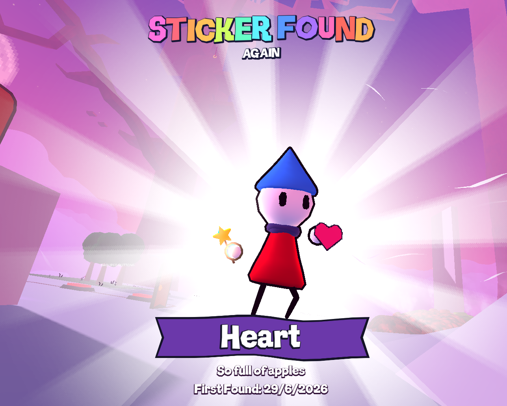
Sticker Collected!
Once collected, you can put them on any page in your Diary and they will be saved.
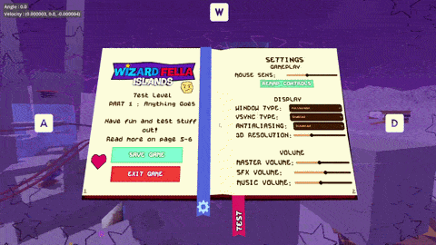
Placing stickers
This is mostly just a cosmetic feature and the game could exist without it... but its kinda cool though.
Resting
There's a new player state. If you stand still for 20 seconds Flute will sit down to rest.
If you continue staying still for another 30 seconds then Flute will fall asleep!
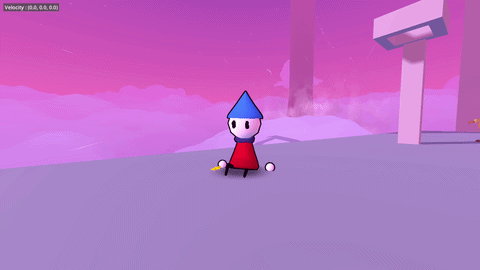
Resting
Walking
If your move speed is slower than regular when running then the animation will be swapped to be a walk.
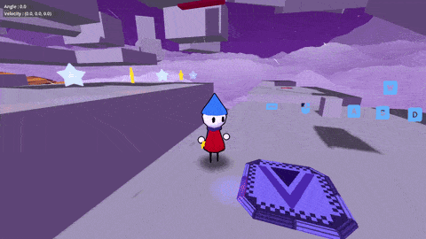
Walking around
UI Updates
The UI for the star counter and diary saving have been updated to better match the style of the game.
I will probably change most of the other UI over the next month aswell.
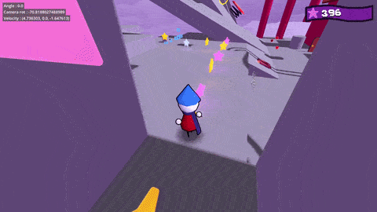
New Star Counter
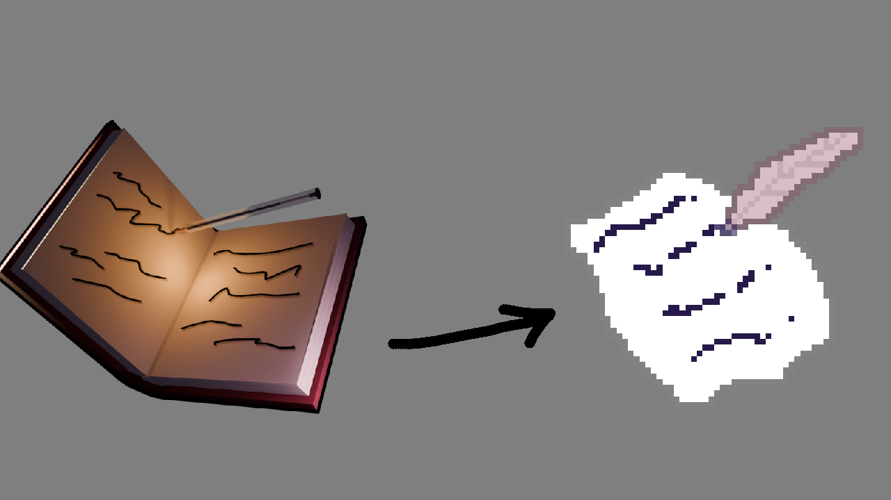
Diary Icon Before/After
Oh and
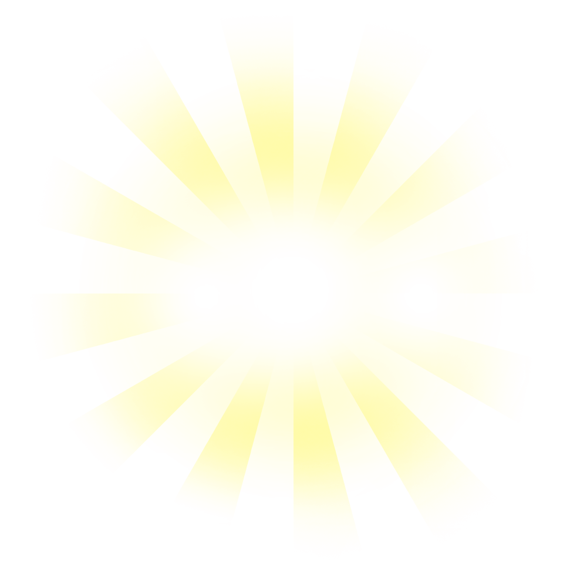
I'm finally gonna release a public demo for the game at some point in late July.
There's still quite a bit to do until then (mostly assets) but I'm confident I can get it done in time.
Make sure to join the discord to hear about it as soon as it happens!
Thank you for reading this newsletter and another thank you for your support!
It's heartwarming knowing that there's people out there who like my weird little game
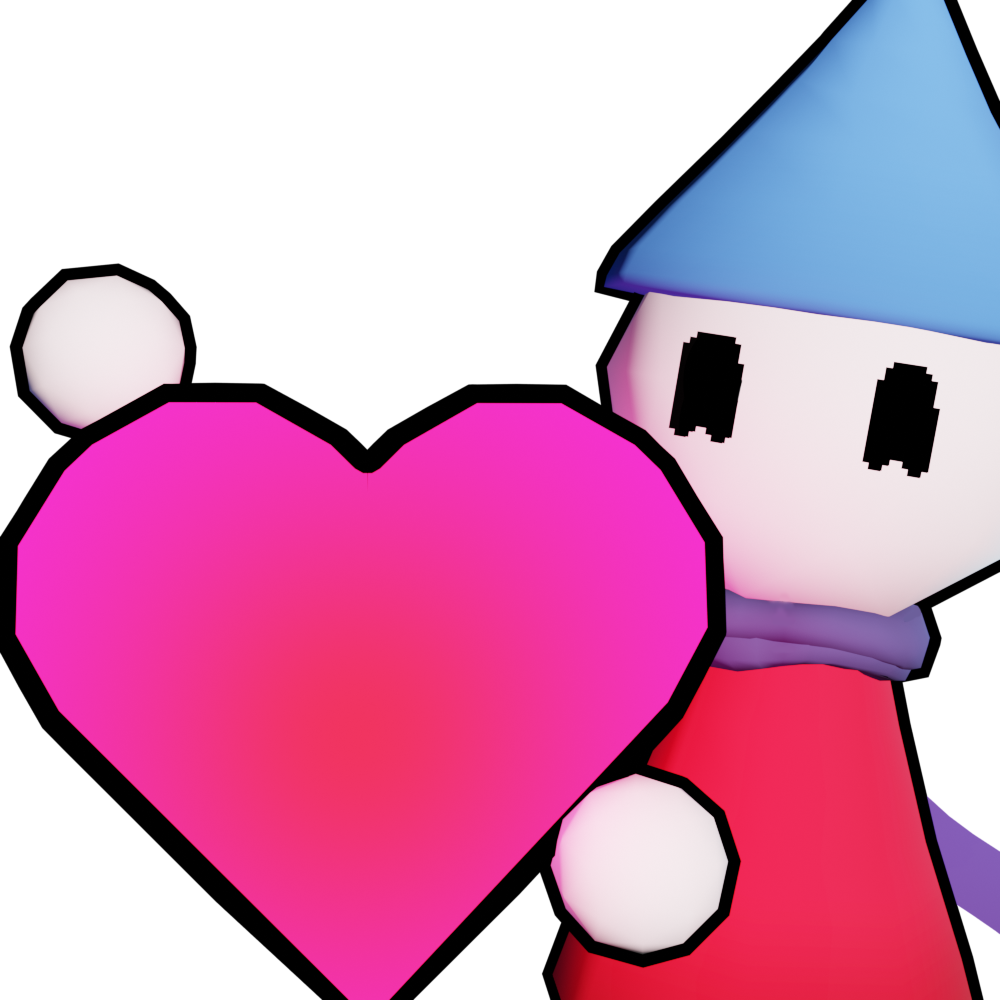
" width="300px">